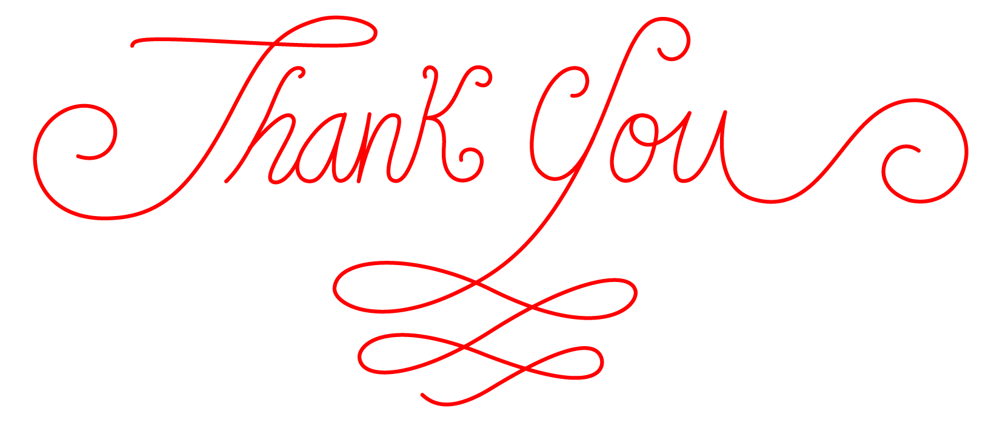

Designer and cat stalker
I am a UX designer who cares about the intersection of technology and visual communication. I also believe in using UX for good to make the world a better place.
Before I transitioned to UX, I started as a graphic designer working in publishing and branding. This gave me a sense of how to make design not just valuable and useful, but also delightful.
I made this portfolio with the love I have for everything that I do. This website showcases my combined love for whimsical designs, technology, hand-lettering, and books. I designed and coded this website, which is hosted through Github. I created and photographed all the artwork, including the hand-lettering, unless stated otherwise.
